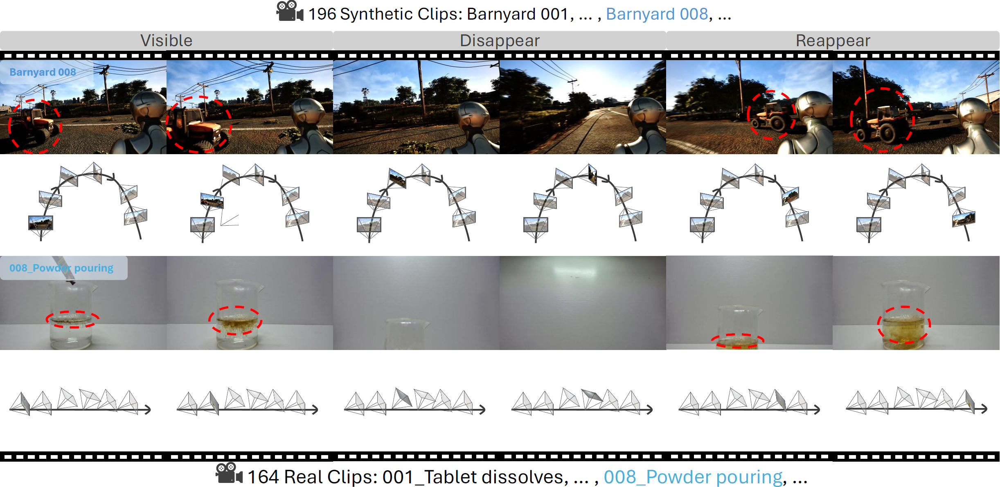
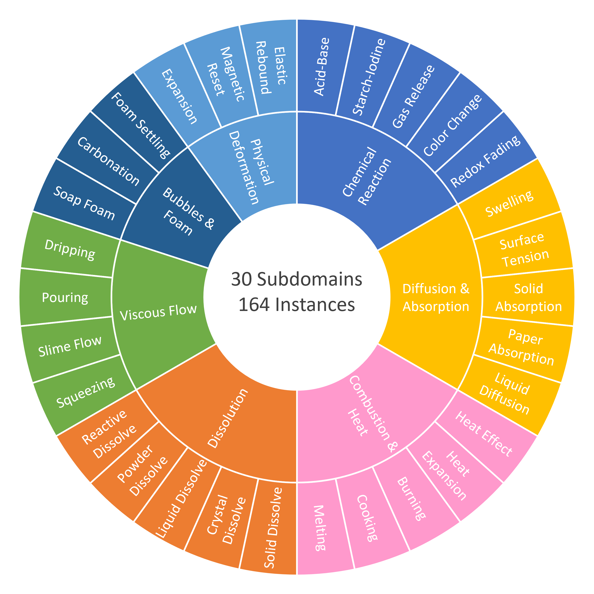
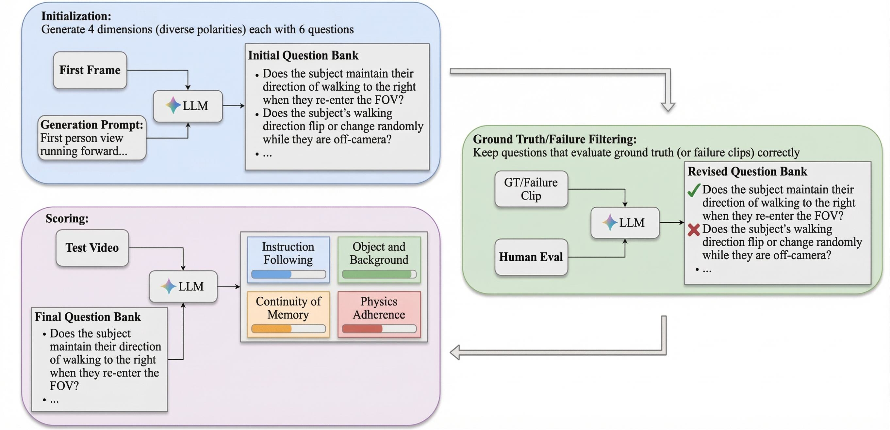
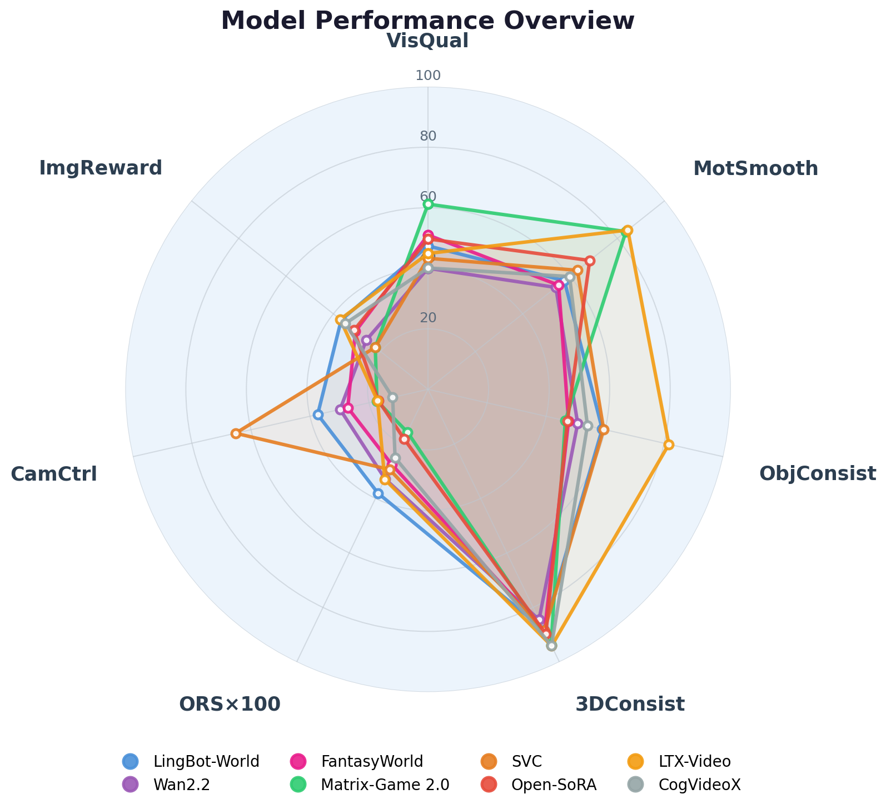
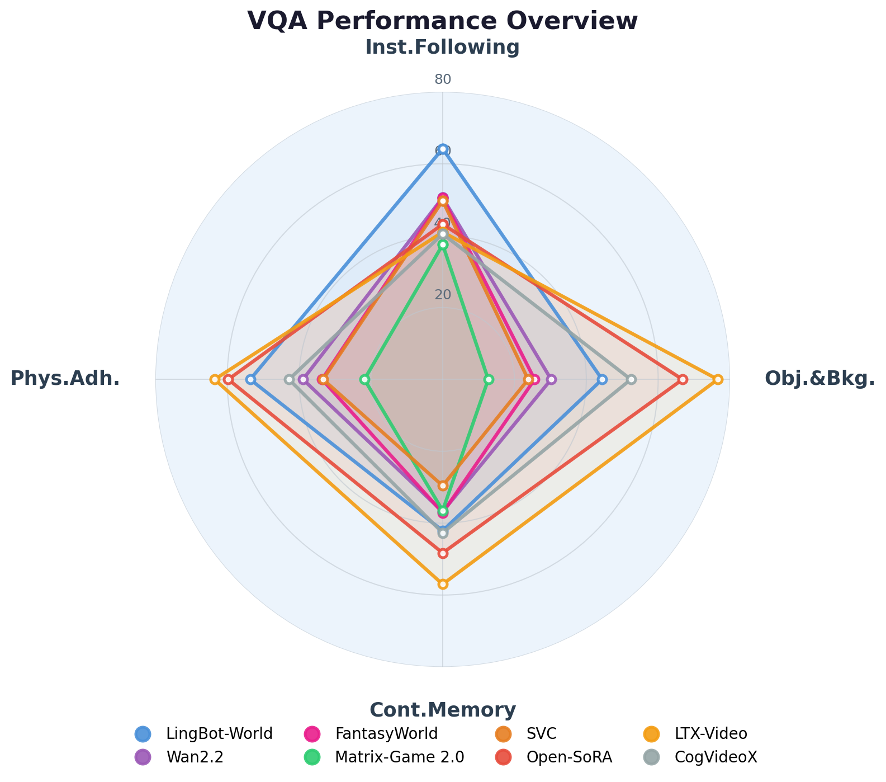
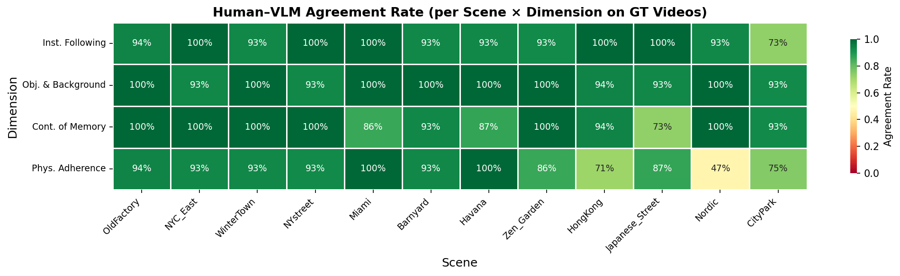

Benchmarking World Modeling in Dynamically Changing Environments
ECCV 2026 Submission #2122Anonymous submission — author information withheld for review

Teaser: MemoBench evaluates memory consistency in world generation models through a disappear-and-reappear paradigm.
Compare generated videos across all 8 models. Use the arrows, keyboard, or clip bar to browse scenes.
MemoBench is a diagnostic benchmark for evaluating memory consistency in world generation models. Each clip follows a disappear-and-reappear structure: a target object is visible, the camera pans away causing it to disappear, and then the camera returns, requiring the model to faithfully recover the object's appearance, position, and state.
Every benchmark clip is divided into three phases:
Rendered in Unreal Engine 5 with diverse 3D scenes and animated target objects. Includes per-frame RGB, metric depth, camera intrinsics, and camera-to-world poses.
Synthetic data: 14 scenes across 5 categories with UE5-rendered ground truth.
Captured in controlled indoor settings covering 30 physical-state-change processes (e.g., dissolving, melting, pouring) across categories that depend on viscosity, elasticity, and thermal conductivity.

Real-world data: 30 processes across 7 categories captured in controlled indoor settings.
We combine automated metrics with VQA-based evaluation to capture both low-level fidelity and high-level semantic correctness.
Visual Quality — AestheticScore + CLIP-IQA+ averaged (0–100)
Motion Smoothness — RAFT optical-flow warp stability (V+R phases)
Object Identity Consistency — DINOv2 patch-token similarity, first frame vs. R-phase
Geo3D Consistency — Depth Anything V2 cosine similarity between consecutive depth maps
Object Reappearance Score (ORS) — SAM-3 text-prompted detection rate × confidence in R-phase
Pixel-Level Fidelity — PSNR, SSIM, LPIPS against ground-truth video
Camera Controllability — ATE rotation RMSE via MapAnything pose estimation
Instruction Following — Does the video execute spatiotemporal instructions from the prompt?
Object & Background Consistency — Are foreground/background elements stable across frames?
Continuity of Memory — Does the model maintain object identity after disappearance?
Physics Adherence — Is locomotion, gravity, lighting physically plausible?

VQA evaluation pipeline: for each clip, we generate dimension-specific questions, filter against ground-truth video and failure cases, then query a VLM to produce per-dimension scores.
Walk through the three filtering stages on real example clips. Toggle between scenes and advance through the pipeline stages.
| Model | VisQual ↑ | MotSmooth ↑ | ObjConsist ↑ | 3DConsist ↑ | ORS ↑ | PSNR ↑ | SSIM ↑ | LPIPS ↓ | CamCtrl ↑ | ImgReward ↑ |
|---|---|---|---|---|---|---|---|---|---|---|
| CI2V Models | ||||||||||
| LingBot-World | 47.4 | 57.6 | 59.0 | 88.2 | 0.381 | 14.41 | 0.490 | 0.482 | 37.4 | 36.7 |
| Wan2.2 | 40.0 | 54.0 | 50.7 | 84.5 | 0.328 | 13.76 | 0.469 | 0.529 | 29.8 | 26.1 |
| FantasyWorld | 51.0 | 55.2 | 47.6 | 88.7 | 0.276 | 13.23 | 0.427 | 0.571 | 27.2 | 30.7 |
| 3D-based Models | ||||||||||
| Matrix-Game 2.0 | 61.2 | 83.6 | 46.5 | 93.7 | 0.157 | 13.49 | 0.376 | 0.550 | 17.3 | 22.3 |
| Stable Virtual Camera | 43.3 | 63.1 | 59.5 | 88.5 | 0.294 | 15.36 | 0.523 | 0.455 | 65.2 | 22.3 |
| I2V Models | ||||||||||
| Open-SoRA | 49.7 | 68.3 | 47.2 | 89.7 | 0.182 | 12.54 | 0.384 | 0.566 | 16.8 | 31.3 |
| LTX-Video | 44.9 | 84.4 | 81.6 | 94.1 | 0.330 | 13.42 | 0.455 | 0.518 | 17.1 | 37.1 |
| CogVideoX | 40.1 | 59.8 | 54.0 | 94.0 | 0.251 | 12.07 | 0.480 | 0.592 | 12.0 | 34.9 |
| Model | Inst.Fol. ↑ | Obj.&Bkg. ↑ | Cont.Mem. ↑ | Phys.Adh. ↑ |
|---|---|---|---|---|
| CI2V Models | ||||
| LingBot-World | 64.2 | 44.4 | 42.1 | 53.6 |
| Wan2.2 | 50.6 | 30.2 | 36.8 | 38.9 |
| FantasyWorld | 50.5 | 25.6 | 37.1 | 33.6 |
| 3D-based Models | ||||
| Matrix-Game 2.0 | 37.5 | 12.7 | 36.5 | 21.8 |
| Stable Virtual Camera | 49.7 | 23.8 | 29.6 | 33.3 |
| I2V Models | ||||
| Open-SoRA | 43.2 | 66.8 | 48.3 | 59.7 |
| LTX-Video | 41.0 | 76.6 | 57.0 | 63.5 |
| CogVideoX | 40.5 | 52.4 | 42.7 | 42.8 |
Radar charts summarizing per-model strengths across automated metrics and VQA dimensions.

Automated metrics (7 axes, normalized). Higher area = stronger overall performance.

VQA dimensions (4 axes). CI2V models lead Instruction Following; I2V models lead other dimensions via camera inactivity.
We validate our VQA pipeline by comparing VLM-generated answers with human judgments from 30 respondents (Ph.D.-level researchers and experienced AI engineers) on 96 questions across 12 scenes.

Per-scene, per-dimension agreement rate between human majority answers and VLM-generated ground-truth answers.